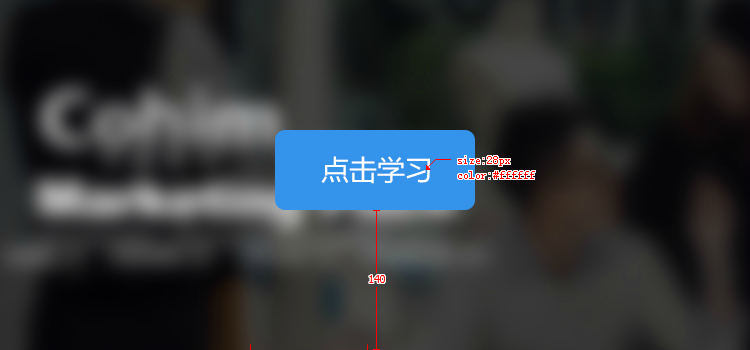

<!DOCTYPE html>
<html ng-app="ezApp">
<head>
	<meta charset="UTF-8"/>
	<meta name="viewport" content="initial-scale=1,maximum-scale=1,user-scalable=no,width=device-width,height=device-height">
	<script src="js/ionic.bundle.min.js"></script>
	<link rel="stylesheet" href="css/ionic.min.css">
		<script>
var app = angular.module("ezApp", ["ionic"]);
app.config(function($stateProvider,$urlRouterProvider) {
	$stateProvider
	.state("map", {
		templateUrl: "map.html"
	})
	.state("novel", {
		templateUrl: "novel.html"
	})
  .state("nd", {
		templateUrl: "nd.html"
	});
})
.controller("ezCtrl",function($scope,$state,$ionicHistory){
	$state.go("map");
  $scope.go_back = function() {
		$ionicHistory.goBack();
	};
  
});

		</script>
</head>
<body ng-controller="ezCtrl">
	<script id="map.html" type="text/ng-template">
		<ion-header-bar class="bar-positive">
			<h1 class="title">地图</h1>
			<a ui-sref="novel" class="button">小说</a>
		</ion-header-bar>
		<ion-content>
			
		</ion-content>
	</script>
	<script id="novel.html" type="text/ng-template">
		<ion-header-bar class="bar-balanced">
          <a ng-click="go_back()">返回</a>
			<h1 class="title">小说</h1>
			<a ui-sref="nd" class="button">xiaoshuo</a>
		</ion-header-bar>
		<ion-content>
			<p ng-include="'txt/xiyouji.txt'"></p>
		</ion-content>
	</script>
  <script id="nd.html" type="text/ng-template">
		<ion-header-bar class="bar-balanced">
          <a ng-click="go_back()">返回</a>
			<h1 class="title">小说</h1>
			<a ui-sref="map" class="button">地图</a>
		</ion-header-bar>
		<ion-content>
			<p>个；大口狗；大沽口d；刚看到；看过d；刚看到；刚看到</p>
		</ion-content>
	</script>
	<ion-nav-view></ion-nav-view>
</body>
</html>
